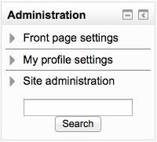
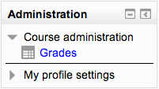
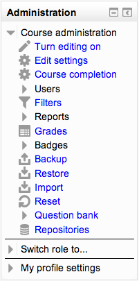

The Administration block provides context-sensitive links to settings pages.
What appears in the Administration block depends upon the Context (Page being shown and user’s permissions). For example, a site administrator on the front page will have Front page settings while a teacher in a course will have more options in Course administration than a student.
Here are examples of the Administration block:
Admin view from front page
Student view in a course
Teacher view in a course